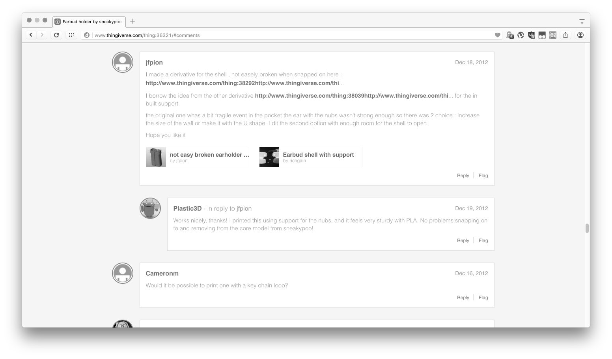
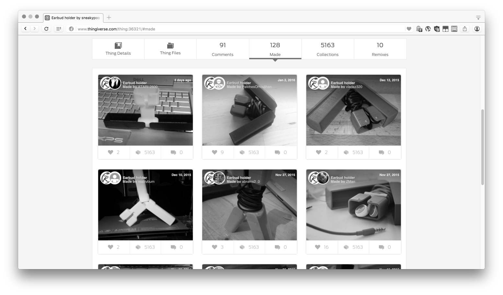
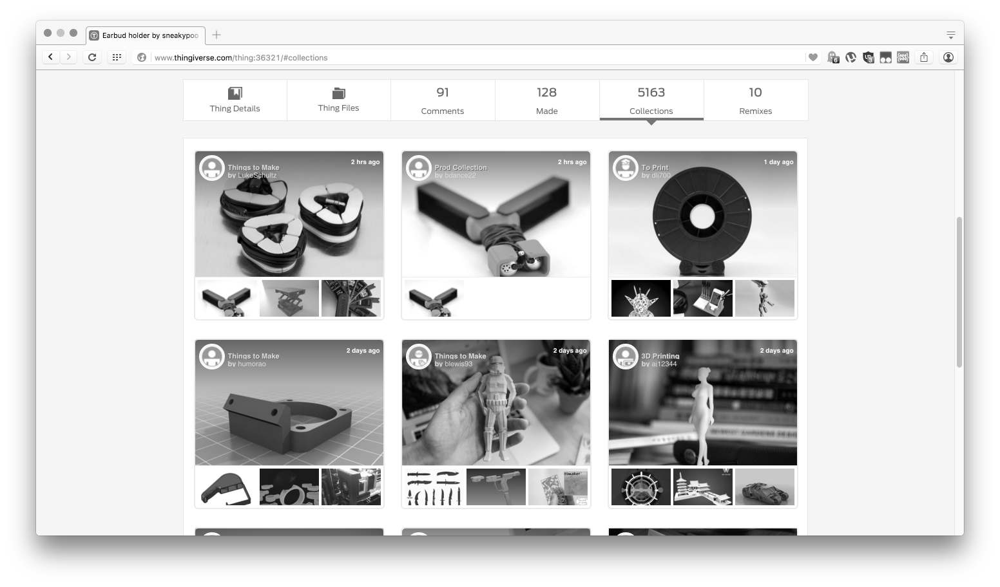
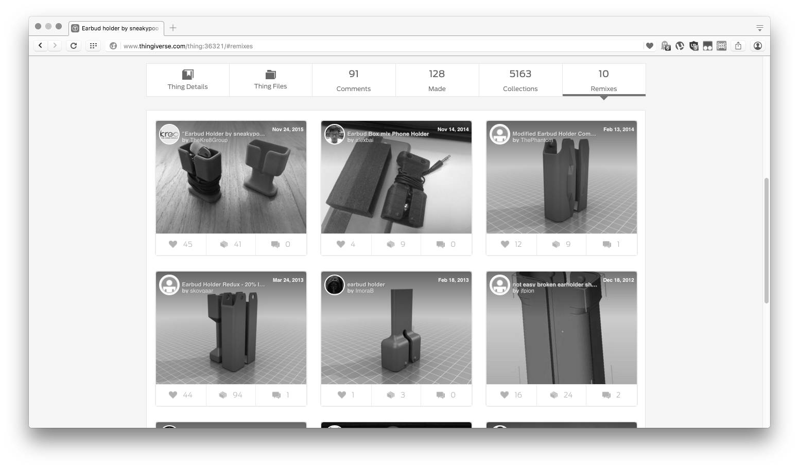

-

Artikel auf der Thingiverse Startseite. Hier sind manchmal auch gesponserte Artikel und Wettbewerbe zu finden. (siehe Bild 10)
-

Möbel
Der Schwerpunkt liegt auf 3D druckbaren Objekten. Objekte größer als ca. 20x20x20cm oder für andere Herstellungsverfahren sind eher selten auf Thingiverse.
-

Die Suche nach Objekten.
Thingiverse ist die derzeit größte Datenbank für 3D-druckbare Objekte die unter Open Source Lizenzen verfügbar sind.
-

Objektansicht:
Rechts sind Funktionen zum persönlichen Interagieren. Diese sind, bis auf die Downloadfunktion, nur mit einem Thingiverse-Account nutzbar. Unter den Objektbildern sind Reiter zur Anzeige alle Objektbestandteile und Attribute.
-

Objekt Details:
Etwas weiter unten auf einem Objekteintrag steht eine Objektbeschreibung und Hinweise vom Author. Rechts befinden sich Statistiken und Attribute des Objekts.
-

Objekt Dateien:
Im Reiter "Thing Files" befinden sich die 3D Modelle und ggf. andere CAD-Daten oder begleitende Dateien. Rechts ist die Lizenz angegeben unter der das Objekt bearbeit- und vervielfältigbar ist.
-

Kommentare:
Im Reiter 'Comments' auf der Objektseite befinden sich Kommentare, Diskussionen und Hinweise von Nutzern.
-

Made:
Nutzer die das Objekt gebaut haben können hier Fotos davon veröffentlichen. In der Regel machen das nur ein Bruchteil der Nutzer die das Teil heruntergeladen haben. In diesem Fall wurden bei 42975 Downloads in der Folge 128 Bilder hochgeladen.
-

Sammlungen:
Wie eine Playliste für Medien können Nutzer Sammlungen anlegen, die sofern nicht anders gewählt, auch gleich für andere einsichtbar sind.
-

Derivate:
Im Reiter "Remixes" sieht man dass dieser Entwurf zehn Weiterentwicklungen inspiriert hat. Das geht von Vereinfachungen, Stabilitätverbesserung bis zur Integration mit anderen Objekten.
-

Thingiverse veranstaltet regelmäßig gesponserte Konstruktionswettbewerbe. Hier für ein Produkt des Spielzeugherstellers Thinkfun, der dafür 3D Dateien von einigen ihrer Spielzeugsets als Open Source veröffentlicht hat.